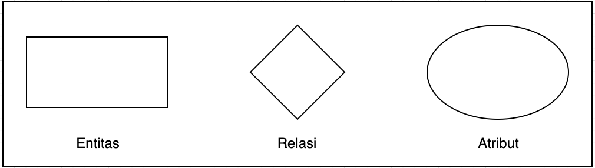

Desain basis data adalah kumpulan proses yang memfasilitssi perancangan, pengembangan implementasi dan pemeliharaan sistem manajemen data perusahaan. Basis data yang dirancang dengan benar, mudah dipelihara, meningkatkan konsistensi data, dan hemat biaya dalam hal ruang penyimpanan. Tujuan utama perancangan basis data adalah untuk menghasilkan model desain logis dan fisik dari sistem basis data yang diusulkan.
Model logis berkonsentrasi pada persyaratan data dan data yang akan disimpan secara independen dari pertimbangan fisik. Itu tidak peduli dengan bagaimana data akan disimpan atau di mana akan disimpan secara fisik. Model desain data fisik melibatkan penerjemahan desain logis dari database ke media fisik menggunakan sumber daya perangkat keras dan sistem perangkat lunak seperti sistem manajemen basis data (DBMS).
Siklus hidup pengembangan database memiliki sejumlah tahapan yang diikuti saat mengembangkan sistem database. Langkah-langkah dalam siklus hidup pembangunan tidak harus diikuti secara religius secara berurutan. Pada sistem database kecil, siklus hidup pengembangan sistem database biasanya sangat sederhana dan tidak melibatkan banyak langkah. Untuk mengapresiasi sepenuhnya diagram di atas, mari kita lihat masing-masing komponen yang terdaftar di setiap langkah.
Proses Desain Basis Data
Terdapat beberapa proses yang harus dibuat untuk mendesain suatu basis data. Berikut proses-prosesnya:
Pengumpulan Data dan Analisis Requirement
Step pertama yang dilakukan ini yaitu analisis requirement. Akan dilakukan dulu analisis mengenai database yang mau dibuat, bagaimana requirement user viewnya ? dan juga bagaimana data tersebut bisa diakses?. Dalam manajemen requirements ini, ada 2 pendekatan yang bisa dipilih, yaitu terpusat dan view integration. Pendekatan terpusat yaitu dimana kebutuhan dari setiap user view digabung menjadi serangkaian kebutuhan tunggal dari aplikasi basis data. Sedangkan pendekatan integration yaitu dimana kebutuhan dari setiap user view digunakan untuk membuat model data terpisah untuk merepresentasikan user view tersebut.
Desain Konseptual

Entity Relationship
Selanjutnya adalah bagaimana membuat sebuah hubungan antar entitas. Untuk dapat merancangan basis data yang baik dan sesuai kebutuhan, pertama-tama kita perlu mempelajari terlebih dahulu apa itu Entity Relationship Diagram(ERD) dan ada apa saja didalamnya. Karena tanpa rancangan ERD yang baik, maka struktur data dari sistem yang kita gunakan mungkin saja akan sulit untuk dikembangkan lebih lanjut atau justru tidak memenuhi kebutuhan dari sistem tersebut.
ERD adalah teknik yang digunakan untuk memodelkan kebutuhan data dari sebuah sistem. umumnya ini digunakan untuk menjelaskan hubungan antar entitas atau tabel yang ada pada basis data agar dapat diketahui hubungan data dan mendapatkan informasi yang dibutuhkan. Untuk memahami ERD lebih lanjut, kita akan memahami lebih lanjut tentang tiga komponen utama dari ERD yaitu, Entitas, Atribut dan Relasi.
Entitas
Apa sih Entitas adalah representasi dari suatu objek yang dapat dibedakan antar entitasnya. umumnya digambarkan sebagai tabel yang memiliki data yang berbeda antar tabel. Contoh dari entitas adalah tabel Mahasiswa, tabel Buku dan tabel Pelajaran. setiap entitas memiliki tipe data dan bentukan data yang berbeda-beda dan menjadikan setiap entitas dapat dibedakan berdasarkan jenisnya. Umumnya entitas dilambangkan dengan simbol persegi panjang.
Atribut
Atribut merupakan bagian dari entitas yang menjadi pembeda antar tabel. dimana setiap atribut mewakili setiap data yang ada pada entitas tersebut. Umumnya atribut dilambangkan dengan bentuk lingkaran elips.
Atribut Key
Atribut yang bersifat unik dan dapat menjadi pembeda antar data. Atribut dimaksud unik adalah data tersebut tidak akan memiliki duplikasi. contoh : NIK pada data kependudukan.
Atribut Simple
Atribut yang bersifat atomic atau atribut yang tidak dapat dipecah lagi. Maksud dari tidak bisa dipecah lagi adalah atribut tersebut sudah menjadi bentuk data yang paling kecil. contoh : Alamat, Nama Depan, Nama Belakang
Atribut Multivalue
Atribut yang memiliki nilai lebih dari satu pada satu atribut. Contohnya adalah nama beberapa pengarang dalam satu buku.
Atribut Composit
Atribut yang dapat dipecah menjadi atribut yang lebih kecil lagi. Contohnya adalah atribut nama yang dapat dipecah menjadi atribut nama depan, nama tengah dan nama belakang.
Atribut Derivatif
Atribut data yang merupakan hasil olahan dari data yang ada dan tidak wajib untuk ada pada basis data.
Relasi
Relasi adalah berupa hubungan antar entitas yang memiliki keterikatan antar data seperti hubungan antara entitas yang bertindak sebagai parent dan juga entitas yang membutuhkan data dari entitas parent dan berperan sebagai entitas anak atau turunan. Contoh relasi adalah entitas 'Buku' terhadap entitas 'Penerbit', dimana satu penerbit dapat menerbitkan banyak buku dan satu buku mungkin hanya akan diterbitkan oleh satu penerbit atau lebih. Hubungan tersebut yang dijelaskan dengan adanya relasi antar entitas untuk menjelaskan batasan relasi dan hubungan data antar entitas tersebut. Umumnya relasi dilambangkan dengan sebuah diamond. Terdapat tiga jenis relasi yang dapat terjadi antar tabel pada basis data yaitu:
one to one
Hubungan satu ke satu adalah hubungan antar tabel yang memiliki hubungan yang memastikan jika data pada tabel satu bertambah, maka data pada tabel satunya juga akan bertambah. Contoh penggunaan relasi 1 ke satu adalah satu data user akan memiliki hubungan satu ke satu ke data profil dimana satu user hanya dapat memiliki satu profil data.
one to many
Hubungan satu ke banyak adalah hubungan antar tabel yang memiliki hubungan seperti parent dan child, dimana satu orang tua, dapat memiliki banyak anak. Sedangkan satu anak hanya dapat memiliki satu orang tua.
many to many
Hubungan banyak ke banyak adalah hubungan yang cukup diharapkan tidak terlalu banyak digunakan. Karena dapat menyebabkan kesalahan data atau data yang ambigu. sehingga umumnya jika terdapat hubungan banyak ke banyak antar tabel. Maka akan dibuatkan satu tabel turunan yang akan menjadi perantara antar tabel tersebut sehingga antar tabel tersebut akan menjadi hubungan satu ke satu atau satu ke banyak. Hal ini penting untuk menghindari data yang bertumpuk dan akan menyulitkan dikemudian hari.
Pemilihan DBMS
Langkah-langkah dalam memilih database yaitu dimulai dari melihat-lihat dulu informasi terkait DBMS dari referensi yang ada. Kedua, buat daftar 2 atau beberapa produk kemudian lakukan evaluasi. Yang terakhir buat sebuah rekomendasi laporannya terkait DBMS itu.
Model Logika
Tahap ini berkaitan dengan pengembangan model database berdasarkan persyaratan. Seluruh desain di atas kertas tanpa implementasi fisik atau pertimbangan DBMS khusus.
Model fisik
Tahap ini mengimplementasikan model logis dari database dengan mempertimbangkan DBMS dan faktor implementasi fisik.
Desain Aplikasi dan Keamanan
Di tahap terakhir ini, harus dipertimbangkan bagaimana aspek aplikasi yang berada di luar database sehingga mempersiapkan sistem dengan keamanan yang baik. Misalnya, sistem DBMSnya di enkripsi